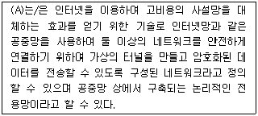
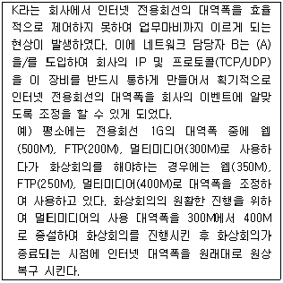

네트워크관리사-2급 (2017-10-22 기출문제)
1과목: TCP/IP
1. 서브넷 마스크(Subnet Mask)에 대한 설명 중 올바른 것은?
- IP Address에서 Network Address와 Host Address를 구분하는 기능을 수행한다.
- 하나의 Network를 두 개 이상의 Network로 나눌 수 없다.
- IP Address는 효율적으로 관리하나 트래픽 관리 및 제어가 어렵다.
- 불필요한 브로드캐스트 메시지를 제한할 수 없다.
(정답률: 83%)

2. '10.0.0.0/8' 인 네트워크에서 115개의 서브넷을 만들기 위해 필요한 서브넷 마스크는?
- 255.0.0.0
- 255.128.0.0
- 255.224.0.0
- 255.254.0.0
(정답률: 62%)
3. IPv4와 IPv6를 비교 설명한 것 중 올바른 것은?
- IPv4는 자체적으로 IPsec과 같은 보안 프로토콜을 내장하고 있지만, IPv6는 보안 프로토콜의 추가가 필요하다.
- IPv4는 필드 구분을 위해 '.'을 사용하고, IPv6는 ';'으로 구분한다.
- IPv4의 각 필드는 10진수로 표시되나, IPv6의 각 필드는 16진수로 표시된다.
- IPv4는 4개의 16bit 정수로 나누어지나, IPv6는 8개의 32bit 정수로 구분된다.
(정답률: 78%)
4. TCP 헤더의 설명으로 올바른 것은?
- RST 플래그 : 데이터가 제대로 전송된 것을 알려준다.
- Window Size : 현재 상태의 최대 버퍼 크기를 말한다.
- Reserved : 수신된 Sequence Number에 대하여 예상된 다음 옥텟을 명시한다.
- FIN 플래그 : 3-Way handshaking 과정을 제의하는 플래그이다.
(정답률: 65%)
5. TCP/IP 4 Layer 중 전송 계층에 속하는 것은?
- Telnet
- FTP
- IP
- TCP
(정답률: 83%)
6. IP 패킷의 구조에서 헤더 부분에 들어가는 항목으로 옳지 않은 것은?
- Version
- Total Length
- TTL(Time to Live)
- Data
(정답률: 69%)
7. 망 내 교환 장비들이 오류 상황에 대한 보고를 할 수 있게 하고, 예상하지 못한 상황이 발생한 경우 이를 알릴 수 있도록 지원하는 프로토콜은?
- ARP
- RARP
- ICMP
- RIP
(정답률: 86%)
8. TFTP에 대한 설명으로 올바른 것은?
- TCP/IP 프로토콜에서 데이터의 전송 서비스를 규정한다.
- 인터넷상에서 전자우편(E-mail)의 전송을 규정한다.
- UDP 프로토콜을 사용하여 두 호스트 사이에 파일 전송을 가능하게 해준다.
- 네트워크의 구성원에 패킷을 보내기 위한 하드웨어 주소를 정한다.
(정답률: 66%)
9. ARP의 기능에 대한 설명 중 옳지 않은 것은?
- 모든 호스트가 성공적으로 통신하기 위해서 각 하드웨어의 물리적인 주소문제를 해결하기 위해 사용된다.
- 목적지 호스트의 IP Address를 MAC Address로 바꾸는 역할을 하며, 목적지 호스트가 시작지의 IP Address를 MAC Address로 바꾸는 것을 보장한다.
- 기본적으로 ARP 캐시(Cache)를 사용하지 않으며, 매번 서버와 통신할 때 마다 MAC Address를 요구한다.
- ARP 캐시(Cache)는 MAC Address와 IP Address의 리스트를 저장한다.
(정답률: 63%)
10. 네트워크 장비를 관리 감시하기 위한 목적으로 TCP/IP 상에 정의된 응용 계층의 프로토콜로, 네트워크 관리자가 네트워크 성능을 관리하고 네트워크 문제점을 찾아 수정하는데 도움을 주는 것은?
- SNMP
- CMIP
- SMTP
- POP
(정답률: 89%)
11. 라우팅 정보를 교환하기 위해 네트워크 컴퓨터에 의해 사용되는 프로토콜로 옳지 않은 것은?
- IGRP
- SMTP
- OSPF
- BGP
(정답률: 64%)
12. IGMP에 대한 설명 중 올바른 것은?
- 라우터가 주어진 멀티캐스트 그룹에 속한 호스트 존재 여부를 판단하기 위해 사용되는 인터넷 프로토콜
- IP Address를 물리적인 랜카드 주소로 변환시키는 주소 결정 프로토콜
- 신뢰성이 있는 연결형 프로토콜
- 신뢰성이 없는 비연결형 프로토콜
(정답률: 83%)
13. RARP 과정에 대한 설명 중 옳지 않은 것은?
- RARP 요청은 송신 호스트가 송신자이고, 목적 호스트이기도 하다.
- 클라이언트 호스트는 RARP 메시지를 RARP 서버로 보낸다.
- RARP 서버는 반드시 송신 호스트와 같은 네트워크 세그먼트에 위치해야 한다.
- RARP는 동적으로 IP Address를 할당할 수 있다.
(정답률: 59%)
14. IP에 관한 설명 중 옳지 않은 것은?
- 비신뢰성 서비스
- 비연결형 서비스
- 데이터그램 형태의 전송
- 에러 제어
(정답률: 70%)
15. RIP 프로토콜의 일반적인 특징을 기술한 것으로 옳지 않은 것은?
- RIP 메시지는 전송계층의 UDP 데이터그램에 의해 운반된다.
- 각 라우터는 이웃 라우터들로부터 수신한 정보를 이용하여 경로 배정표를 갱신한다.
- 멀티캐스팅을 지원한다.
- 네트워크의 상황 변화에 즉시 대처하지 못한다.
(정답률: 55%)
16. 'C Class'인 IP Adress에 대한 보기의 설명 중 옳지 않은 것은?
- 서브넷 마스크로 '255.255.255.0'을 사용했을 경우, '210.111.4.4'와 '210.111.4.5'는 같은 네트워크임을 인식한다.
- 서브넷 마스크로 '255.255.255.0'을 사용했을 경우, '210.111.104.1'과 '210.111.104.254'는 같은 네트워크임을 인식한다.
- C Class에서는 서브넷 마스크로 '255.255.255.128'은 사용할 수 없다.
- C Class에서 네 개의 네트워크로 나누고자 한다면, 실제 서브넷 마스크는 '255.255.255.192'가 된다.
(정답률: 67%)
17. 프로토콜과 일반적으로 사용되는(Well Known) 포트번호의 연결이 옳지 않은 것은?
- FTP : 21번
- Telnet : 23번
- HTTP : 180번
- SMTP : 25번
(정답률: 90%)
2과목: 네트워크 일반
18. 멀티 플렉싱 방식 중 주파수 대역폭을 다수의 작은 대역폭으로 분할 전송하는 방식은?
- ATDM(Asynchronous Time Division Multiplexing)
- CDM(Code Division Multiplexing)
- FDM(Frequency Division Multiplexing)
- STDM(Synchronous Time Division Multiplexing)
(정답률: 77%)
19. Bus 토폴로지(Topology)에 대한 설명으로 올바른 것은?
- 스타 토폴로지보다 네트워크를 구축하는데 더 많은 케이블이 필요하기 때문에, 배선에 더 많은 비용이 소요된다.
- 각 스테이션이 중앙 스위치에 연결된다.
- 터미네이터(Terminator)가 시그널의 반사를 방지하기 위하여 사용된다.
- 토큰이라는 비트의 패턴이 원형을 이루며 한 컴퓨터에서 다른 컴퓨터로 순차적으로 전달된다.
(정답률: 83%)
20. 패킷 교환 방식의 단점이 아닌 것은?
- 선로 장애 시 복구가 어렵다.
- 패킷 교환을 위한 소프트웨어 및 하드웨어가 복잡하다.
- 큐잉(queuing) 지연이 존재한다.
- 각 패킷마다 주소를 위한 오버헤드가 존재한다.
(정답률: 54%)
21. IEEE 802 프로토콜의 연결이 올바른 것은?
- IEEE 802.3 : 토큰 버스
- IEEE 802.4 : 토큰 링
- IEEE 802.11 : 무선 LAN
- IEEE 802.5 : CSMA/CD
(정답률: 85%)
22. 다음 (A) 안에 들어가는 용어 중 옳은 것은?

- VLAN
- NAT
- VPN
- Public Network
(정답률: 80%)
23. (A) 안에 맞는 용어로 옳은 것은?

- QoS (Quality of Service)
- F/W (Fire Wall)
- IPS (Intrusion Prevention System)
- IDS (Intrusion Detection System)
(정답률: 81%)
24. 데이터 통신망에서 정보를 교환하는 방식 중 옳지 않은 것은?
- 메시지 교환
- 패킷 교환
- 망 교환
- 회선 교환
(정답률: 65%)
25. 하나의 회선을 여러 사용자들이 동시에 채널을 나누어 사용할 수 있도록 하는 방법은?
- 엔코딩
- 멀티 플렉싱
- 디코딩
- 흐름 제어
(정답률: 90%)
26. 데이터링크 계층(Datalink Layer)에 대한 설명으로 옳지 않은 것은?
- 전송상에 발생하는 오류를 검출한다.
- 데이터의 표현형식을 변경한다.
- 전송상에 발생하는 오류를 정정한다.
- 비트들을 프레임으로 구성한다.
(정답률: 49%)
27. PCM 변조 방식의 변조과정 순서를 올바르게 나열한 것은?
- 표본화-양자화-압축-부호화
- 표본화-압축-양자화-부호화
- 표본화-부호화-양자화-압축
- 표본화-양자화-부호화-압축
(정답률: 70%)
3과목: NOS
28. Linux에서 사용자가 현재 작업 중인 디렉터리의 경로를 절대경로 방식으로 보여주는 명령어는?
- cd
- man
- pwd
- cron
(정답률: 79%)
29. tar로 묶인 'mt.tar'를 풀어내는 명령은?
- tar –tvf mt.tar
- tar -cvf mt.tar
- tar –cvvf mt.tar
- tar -xvf mt.tar
(정답률: 56%)
30. Linux에서 네트워크 설정에 대한 설명으로 옳지 않은 것은?
- Linux는 Windows 시스템과 같이 완벽한 PnP 기능을 지원하지 못한다.
- LAN 카드 설치는 Linux 커널에 드라이버를 포함시키거나, 필요할 때마다 메모리에 로딩 할 수 있다.
- LAN 카드를 메모리에 로딩해서 사용하려면 'modprobe' 명령을 사용한다.
- 네트워크 설정은 'ipconfig' 로 확인 할 수 있다.
(정답률: 65%)
31. Windows Server 2008 R2에서 IIS 관리자의 기능으로 옳지 않은 것은?
- 웹 사이트의 기본 웹 문서 폴더를 변경할 수 있다.
- 기본 웹 문서를 추가하거나 기본 웹 문서들의 우선순위를 조정할 수 있다.
- 가상 디렉터리의 이름은 실제 경로의 이름과 동일하게 해야 한다.
- 디렉터리 검색기능을 활성화하면 기본 문서가 없을 때 파일들의 목록이 나타난다.
(정답률: 80%)
32. Windows Server 2008 R2에 설치된 DNS에서 지원하는 레코드 형식 중 실제 도메인 이름과 연결되는 가상 도메인 이름의 레코드 형식은?
- CNAME
- MX
- A
- PTR
(정답률: 80%)
33. Windows Server 2008 R2에서 DHCP 서버 구성 시 옳은 것은?
- 특정 호스트에게 항상 같은 IP 주소를 부여하려면 그 호스트의 이름이 필요하다.
- 특정 호스트에게 IP 주소 부여를 허가하거나 거부하려면 해당 호스트의 MAC 주소가 필요하다.
- 클라이언트가 도메인 이름 조회를 할 수 있게 하려면 WINS 서버를 지정한다.
- DHCPv6 클라이언트가 DHCP 서버로부터 IPv6 주소를 얻기 원한다면 상태 비저장 모드를 사용한다.
(정답률: 58%)
34. Windows Server 2008 R2의 Active Directory에 대한 설명 중 올바른 것은?
- 액티브 디렉터리상의 모든 개체는 고유한 식별자를 가진다.
- 개체는 이동하거나 이름을 수정할 수 있다.
- 개체의 식별자는 변경할 수 있다.
- 개체들은 디렉터리 개체에 의해 식별되는 데이터를 가지고 있다.
(정답률: 38%)
35. Windows Server 2008 R2의 Hyper-V에 관한 설명으로 옳지 않은 것은?
- 하드웨어 데이터 실행 방지(DEP)가 필요하다.
- 서버관리자의 역할 추가를 통하여 Hyper-V 서비스를 제공 할 수 있다.
- 스냅숏을 통하여 특정 시점을 기록 할 수 있다.
- 하나의 서버에는 하나의 가상 컴퓨터만 사용할 수 있다.
(정답률: 83%)
36. 리눅스 시스템에서 마운트 되었는지 확인 사용하는 명령어로 옳지 않은 것은?
- fdisk
- mount
- df
- cat /etc/mtab
(정답률: 51%)
37. Linux의 아파치(Apache) 설정파일(httpd.conf)에서 설정 가능한 옵션에 대한 설명 중 올바른 것은?
- Port : 포트번호를 지정한다.
- DocumentRoot : 아파치 설정과 관련된 문서의 위치를 지정한다.
- Timeout : 클라이언트의 요청을 받는데 걸리는 시간으로 기본값은 60초이다.
- MaxClients : 웹서버에 동시에 접속할 수 있는 클라이언트 수이다.
(정답률: 60%)
38. Windows Server 2008 R2에서 보안 템플릿에 대한 설명으로 옳지 않은 것은?
- 로컬 컴퓨터에 보안 템플릿을 적용하려면 보안 구성 및 분석 또는 secedit 명령줄 도구를 사용할 수 있다.
- 보안 템플릿은 계정 정책, 로컬 정책, 이벤트 로그, 시스템 서비스 등을 정의할 수 있다.
- 그룹 정책으로 보안 설정이 확장 되었으나, 조직 구성 단위, 도메인 및 사이트 그룹 정책 개체에 연결되지는 않기 때문에 보안 설정 도구에서 변경된 그룹 정책 객체의 보안 구성을 차례로 여러 컴퓨터에 영향을 줄 수는 없다.
- 보안 템플릿 서식 파일은 텍스트 기반 '.inf' 파일로 저장된다.
(정답률: 71%)
39. Windows Server 2008 R2 시스템에서 발생한 사건을 추적하는데 사용되는 최적의 방법으로, 파일 접근, 시스템 로그온, 시스템 구성 변경과 같은 자원 사용에 관련된 정보를 수집하는 데 감사를 사용할 수 있다. 감사를 구성한 동작이 발생하면 동작은 시스템의 어느 로그에 기록되는가?
- 전달된 이벤트 로그
- 보안 로그
- 응용프로그램 로그
- 설치 로그
(정답률: 78%)
40. 리눅스의 네임 서버(DNS) 데몬이 시작될 때 가장 먼저 읽는 파일로 여러 개의 영역(zone)에 대한 설정 파일들의 위치 정보를 갖고 있는 파일은?
- /var/named.conf
- /var/named/zone
- /etc/named.conf
- /etc/named/zone
(정답률: 54%)
41. Linux 시스템에서 삼바서버(Samba Server)의 환경 설정파일은?
- samba.conf
- smbusers
- lmhosts
- smb.conf
(정답률: 63%)
42. 아파치 웹서버의 서버 측 에러 메시지 내용으로 맞는 것은?
- 502 (Service Unvailable) : 클라이언트 요청 내용에는 이상이 없지만, 서버측에서 클라이언트의 요청을 서비스할 준비가 되지 않은 경우
- 501 (Not Implemented) : 클라이언트의 서비스 요청 내용 중에서 일부 명령을 수행할 수 없을 경우
- 503 (Bad Request) : 게이트웨이의 경로를 잘못 지정해서 발생된 경우
- 500 (Internal Server Error) : 서버에 보낸 요청 메시지 형식을 서버가 해석하지 못한 경우
(정답률: 65%)
43. Windows Server 2008 R2에서 사용자 프로필 관리에 대한 설명으로 옳지 않는 것은?
- 로컬 프로필은 사용자가 로그온할 때 프로필을 생성한다.
- 관리자가 생성한 로밍 프로필은 서버에 저장된다.
- 필수 프로필은 누구나 수정할 수 있다.
- 로컬 프로필은 로컬 컴퓨터의 하드디스크에 저장된다.
(정답률: 76%)
44. Windows Server 2008 R2에서 DNS 서버 구성 시 보조 영역에 대한 설명으로 옳지 않은 것은?
- 보조 DNS 서버를 설정하는 것이다.
- 주 DNS 서버로부터 영역 DB를 받아오지만, 모든 DB 복사본을 유지하지 않고 일부 레코드의 복사본만 유지한다.
- 주 DNS 서버로부터 받아온 DB를 수정하거나 삭제할 수 없다.
- 보조 DNS 서버를 두는 이유는 내결함성을 높이기 위한 것이다.
(정답률: 50%)
45. Linux 시스템에서 'chmod 644 index.html'라는 명령어를 사용하였을 때, 'index.html' 파일에 변화되는 내용으로 옳은 것은?
- 소유자의 권한은 읽기, 쓰기가 가능하며, 그룹과 그 외의 사용자 권한은 읽기만 가능하다.
- 소유자의 권한은 읽기, 쓰기, 실행이 가능하며, 그룹과 그 외의 사용자 권한은 읽기만 가능하다.
- 소유자의 권한은 쓰기만 가능하며, 그룹과 그 외의 사용자 권한은 읽기, 쓰기가 가능하다.
- 소유자의 권한은 읽기만 가능하며, 그룹과 그 외의 사용자 권한은 읽기, 쓰기, 실행이 가능하다.
(정답률: 70%)
4과목: 네트워크 운용기기
46. 다음 전송 매체 중 신호 전달 거리가 길고, 속도가 가장 빠른 것은?
- 꼬임선
- 동축케이블
- 광섬유
- 2-선식 개방 선로
(정답률: 90%)
47. IP Address의 부족과 내부 네트워크 주소의 보안을 위해 사용하는 방법 중 하나로, 내부에서는 사설 IP Address를 사용하고 외부 네트워크로 나가는 주소는 공인 IP Address를 사용하도록 하는 IP Address 변환 방식은?
- DHCP 방식
- IPv6 방식
- NAT 방식
- MAC Address 방식
(정답률: 79%)
48. 네트워크 장비인 라우터에 대한 설명 중 옳지 않은 것은?
- TCP/IP의 트래픽 경로를 제어할 수 있다.
- 트래픽상의 신호재생과 증폭을 하여 유효거리를 확장할 수 있다.
- OSI 7 Layer에서 3계층에 해당한다.
- 분리된 네트워크를 연결해준다.
(정답률: 72%)
49. RAID에 관한 설명 중 올바른 것은?
- 하나의 RAID는 운영체계에게 논리적으로는 여러 개의 하드디스크로 인식된다.
- 모든 디스크의 스트립은 인터리브(Interleave)되어 있으며, 임의적으로 어드레싱 된다.
- RAID-0 방식은 스트립은 가지고 있지만 데이터를 중복해서 기록하지는 않는다.
- RAID에는 중복되지 않는 어레이를 사용하는 형식은 없다.
(정답률: 54%)
50. Star Topology에서 동시에 2개 이상의 연결을 할수 있는 장비로써 각 포트마다 전용 할당이 가능하고, 연결된 장치 수량에 영향을 받지 아니하며 속도가 떨어지지 않고 사용이 가능한 장치는?
- Router
- Switch HUB
- Repeater
- Dummy HUB
(정답률: 78%)